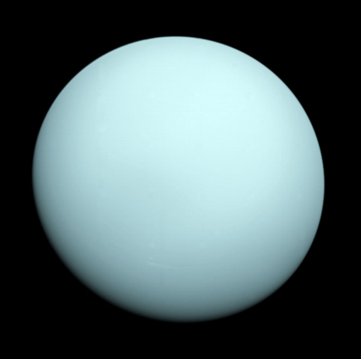

|
|
 UranusGiant planets do not have the same layered structure like earthlike planets do. Their evolution was quite different than that of the earthlike planets, and they have much more gas and ice inside. Uranus is a giant planet its interior is primarily made of methane ice. Motions in the interior of Uranus help form the magnetosphere of Uranus. Heat generated within Uranus helps form the unusual winds of the atmosphere. The plain aquamarine face of Uranus confirms that Uranus is covered with clouds. The sameness of the planet's appearance shows that the planet's atmosphere is mostly composed of methane. The planet appears to be blue-green because the methane gas of the atmosphere traps red light and does not allow that color to escape. Beside the clouds of methane crystals low in the atmosphere, smog, composed of ethane, it is also high in the atmosphere. The cloud particles continually recycle themselves, first creating then destroying the heaviest crystals. This is an indication that Uranus' atmosphere is still evolving from its formation out of the solar nebula. Because Uranus lies on its side, Uranus has very strange seasons. Motions in the cloud patterns show that, like Jupiter and Saturn, the basic weather of Uranus can be described as a striped pattern of winds. This means that, even though the pattern is hard to see, Uranus is striped, just like Jupiter and Saturn. The magnetosphere of Uranus is medium sized, but still much bigger than the Earth's. It holds all of Uranus' moons. It is probably made in the middle of the planet, and with ice, rather than with iron at the core. Uranus has 27 moons and a complicated ring system. The ring is a completely different form of ring than the one around Saturn or Jupiter. At Uranus there is a very obvious partial ring, or "ring arc". |